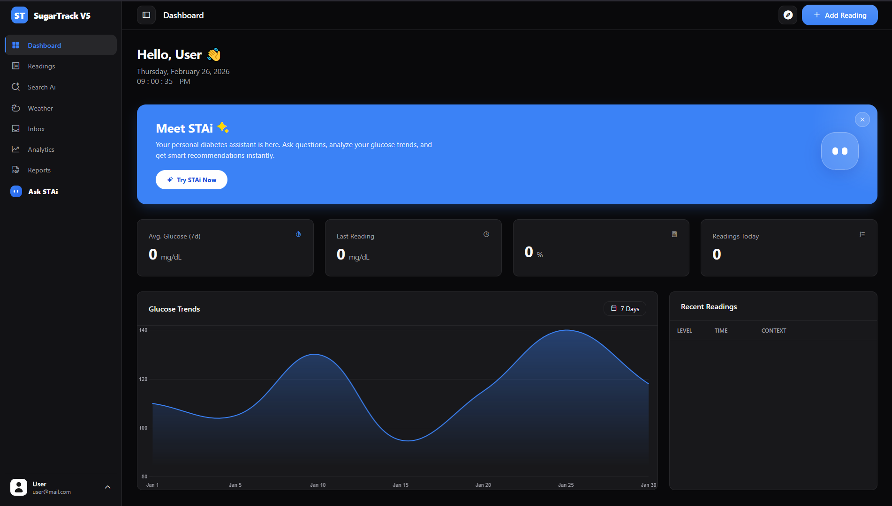
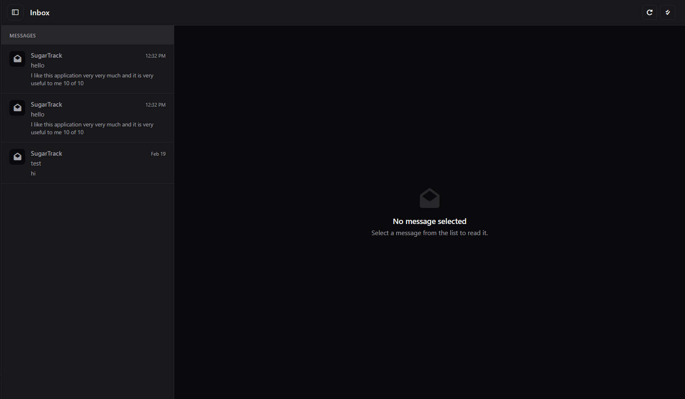

Updates & Changelog
Keep track of new features, bug fixes, and visual improvements.
V5.0
Latest Release
February 2026
We've completely overhauled the Inbox and Dashboard experiences. The app now features a true native split-pane desktop view and intelligent trend tracking.

The new Dashboard Ui.

The new Split-Pane Inbox architecture.
- New Implemented full-bleed Square UI desktop split-pane for the Inbox.
- Improved Added advanced touch-drag swipe-to-close physics for mobile modals.
- New Introduced intelligent, time-weighted 7-day glucose averaging algorithm.
- Fix Resolved Chart.js container overflow bugs on mobile grid views.
V4.0
January 2024
Under-the-hood security upgrades and database migration.
- Migrated codebase entirely to the Firebase v10.8 Modular SDK.
- Added secure account deletion modal requiring password re-authentication.
- Redesigned User Profile avatar selection utilizing Firebase paths.
V3.0
January 2023
- Initial deployment of the SugarTrack dashboard.
- Core glucose logging and tracking setup.
- Basic authentication implementation.